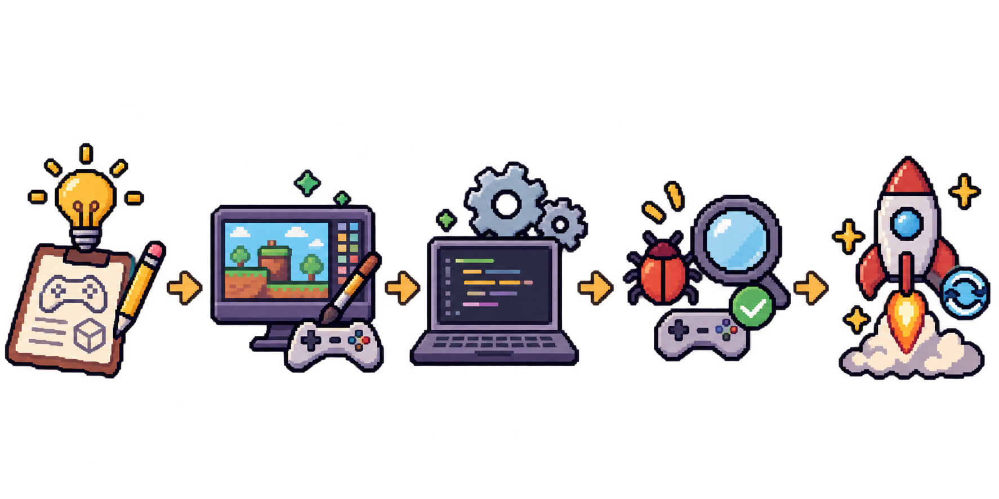
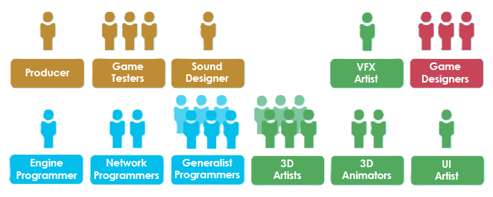
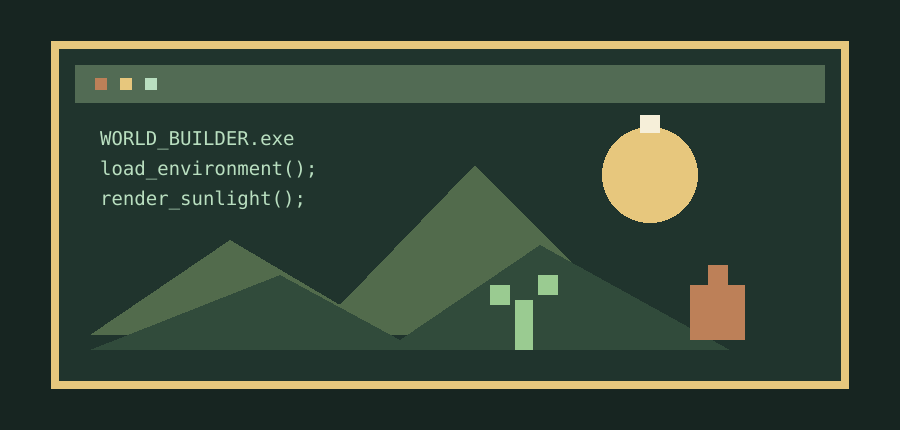

01 / PROCESO
Desarrollo
Conoce las etapas que transforman una idea en un videojuego terminado.
Ver proceso →Ven, aventurate y descubre como se hacen tus videojuegos favoritos. Aprende un poco de su historia, el camino a la produccion y mucho mas.
Explorar el desarrollo ↗
Usualmente un videojuego esta hecho por un estudio en el cual personas de varias disicplinas (Diseñadores, programadores, artistas, entre otros) colaboran para dar a luz una nueva idea que pueda volverse una experiencia para los demas.
En este espacio conocerás las etapas y herramientas que hacen posible cada experiencia de juego.
Conocer las herramientas
Desde la primera idea hasta el mundo que aparece en pantalla, cada área aporta algo esencial.

Conoce las etapas que transforman una idea en un videojuego terminado.
Ver proceso →
Explora motores gráficos, lenguajes, estilos visuales y animación.
Explorar →
Recorre algunos momentos que marcaron la evolución del gaming.
Viajar en el tiempo →